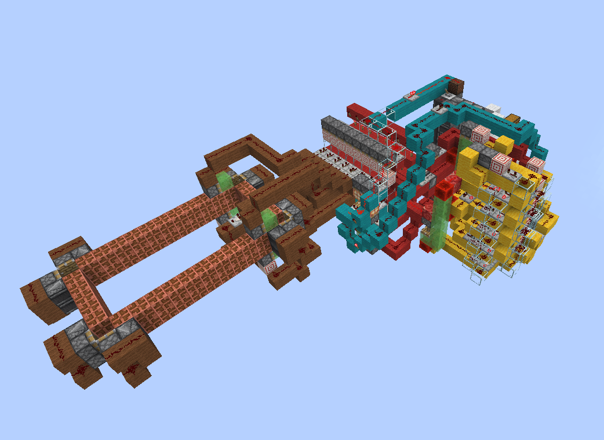

How to Design and Build a Gas Dynamic Laser

Introduction
In the 1970's gripped in the heart of the cold war American and Soviet scientists pushed the boundaries of the laws of physics to design advanced weapons and countermeasures to try and gain the upper hand. From even the first days after the invention of the first laser both sides raced to build more and more powerful lasers to fuel powerful directed energy weapons to gain an upper hand in a theoretical nuclear exchange that thankfully never came to pass. Among this early mania to design the most powerful lasers ever made the Gas Dynamic Laser was invented, a unique and bizarre form of laser that resembles a rocket engine more than a traditional laser. Born out of the same physics and laboratory used to develop the heat shields used in the Apollo program the GDL appears to break all the rules of lasers; achieving a population inversion through pure thermodynamics, powered purely by combustion, and able to achieve power densities beyond anything else.
While today it has been superseded simpler fiber lasers and more poweful chemical lasers, I have been fascinated by this bizarre laser architecture for years. Given modern advances in manufacturing processes, computing, as well as a burgeoning liquid rocketry community, I believe that today it is perfectly achievable for a hobbyist to build one of these one their own. What follows is a short overview of my research as well as some advice and guidelines for constructing your own GDL.
Physics
The physics behind gas dynamic lasers are simultaneously what makes them interesting to me as well as what has made them historically so hard to design. A gas dynamic laser combines multiple disparate fields of physics which rarely interact including aerodynamics, thermodynamics, electromagnetism and optics, as well as a healthy dose of mechanical engineering to build one.
I will try to make my brief explanation as approachable as possible to anyone, however it is reccomended that one have atleast a background in physics if you really want to understand the underlying physical processes. My explanation will be by no means exhaustive and if you want a more definitive in depth source I would heavily reccomend Andersons excellent 1976 text.
Basics of Gas Lasers
To understand a gas dynamic laser one must first understand the simpler model of a gas laser. Luckily the most common form of gas dynamic laser is a CO2-N2 based laser, which shares many of the same physical properties of the common CO2 laser used often for hobby and professional laser cutters
Population Inversion
Every laser, no matter how exotic, relies on the same principle: Given a collection of atoms or molecules with quantized energy levels (either energy level of electrons in an atoms orbit, or the vibrational modes of a molecule), if one can push more of the said states into a higher level than a lower level they will amplify and intensify light energy as it passes through the medium.
This amplification effect is known as stimulated emission, an effect Einstein predicted in 1917 and the one that gives the laser its acronym (Light Amplification by Stimulated Emission of Radiation). When a molecule sits in an excited state and a photon of the right wavelength which exactly matches the energy of that state passes by, the photon can be absorbed and re-emitted twicefold by the molecule dropping down to a lower state and emitting a second photon, identical in frequency, phase, and direction to the first. If one were to create a bulk material of molecules in this state you would have a system which would exponentially amplify any light which passed through it.
The catch is that the reverse process, absorption can also happen: a passing photon can just as easily be swallowed by a molecule sitting in the lower state, kicking it up to the excited one and converting that photon into potential energy stored in the molecule. In a normal gas at thermal equilibrium there are always more molecules in the lower state than the upper one, so absorption wins and a beam of light is attenuated rather than amplified. The relative populations of two states separated by an energy gap (\Delta E) at a temperature (T) follow the Boltzmann distribution:
Since the exponent is always negative for a gas in equilibrium, the upper state is always less populated than the lower one. To get net amplification you need to flip this around so that the upper state is more populated than the lower state, a condition called a population inversion. Notice that no positive, finite temperature can ever satisfy this in equilibrium; a population inversion is fundamentally a non-equilibrium state, and achieving and maintaining one is the central problem of every laser. In fact in early laser literature this state is known as negative temperatore (a more evocative, if less self explanatory name for the state).
CO2 Lasers
When most people picture a laser they imagine electrons jumping between energy levels in an atom, as in a helium-neon or ruby laser. Afterall that is the traditional first explanation any undergrad would encounter. But molecules can store energy in other ways too. A molecule made of two or more atoms can rotate, and crucially it can vibrate, with its atoms oscillating back and forth as if connected by tiny springs. These vibrations are also quantized, meaning the molecule can only vibrate with certain discrete amounts of energy, and the gaps between these vibrational energy levels happen to correspond to photons in the infrared part of the spectrum.
A vibrational laser is simply a laser whose population inversion lives between two of these molecular vibrational states rather than between electronic states. Because vibrational energy gaps are small compared to electronic ones, the photons they emit are low energy and long wavelength, deep in the infrared. This also turns out to make them remarkably efficient: less of the input energy is wasted, and a much larger fraction of it can come out as useful light. That efficiency is exactly why vibrational lasers, and the CO2 laser in particular, became the workhorses of high power laser engineering.
The carbon dioxide laser is the most important vibrational laser ever built, and it is the molecule at the heart of nearly every gas dynamic laser. A CO2 molecule is linear, a carbon atom flanked by two oxygens, and it has three distinct ways to vibrate, called its normal modes:
- The symmetric stretch, where both oxygen atoms move outward and inward together.
- The bending mode, where the molecule flexes away from a straight line.
- The asymmetric stretch, where one oxygen moves in while the other moves out.
The asymmetric stretch mode is the special one. A molecule excited into this mode sits at a relatively high vibrational energy, and it can drop down into the symmetric stretch (or the bending mode) while emitting a photon. The transition from the asymmetric stretch down to the symmetric stretch produces the famous 10.6 μm infrared line that CO2 lasers are known for. So if we can arrange for more CO2 molecules to be sitting in the asymmetric stretch state than in the symmetric stretch state, we have our population inversion and we have a laser.
There are two features of CO2 that make this practical. First, the upper laser level (the asymmetric stretch) is long lived, meaning a molecule will happily sit there for a relatively long time before spontaneously decaying, giving us time to build up a large population. Second, the lower laser level empties quickly, draining away through collisions so it does not clog up and destroy the inversion. A long lived upper level and a fast draining lower level are the ideal recipe for a population inversion.
In practice CO2 lasers almost never use pure carbon dioxide. They use a mixture, and the most important additive is nitrogen (N2). Nitrogen is a simple diatomic molecule with a single vibrational mode, and by a fortunate coincidence of nature the energy of its first vibrational level is almost exactly equal to the energy of the CO2 asymmetric stretch. This near perfect match means that an excited nitrogen molecule colliding with a ground state CO2 molecule can hand over its vibrational energy almost losslessly, kicking the CO2 straight into its upper laser level. Nitrogen therefore acts as an energy reservoir and a pump: it is easy to excite in bulk, it holds that energy for a long time because a lone N2 molecule has no easy way to radiate it away, and it feeds it efficiently into the CO2. Most CO2 laser mixtures also include helium, which helps drain the lower laser level and conduct heat away.
In a conventional CO2 laser this nitrogen is excited by running an electric discharge through the gas. The genius of the gas dynamic laser, as we will see next, is that it dispenses with the electric discharge entirely and excites the nitrogen with nothing but heat, then exploits the physics of a supersonic nozzle to turn that heat into a population inversion.